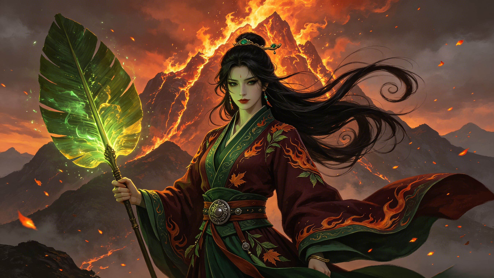

Keeper of the Banana Leaf Fan
铁扇公主
She was a queen. A wife. A mother. When heaven came to her mountain with demands, she answered with the wind. Her fan can summon tempests, extinguish the fires of the underworld, and send armies flying across the horizon. She has lost her husband to another woman and her son to the bodhisattva of mercy — but she has never, not once, bent her iron will.
Princess Iron Fan (铁扇公主, Tie Shan Gongzhu) is the wife of the Bull Demon King and the wielder of the magical Banana Leaf Fan — a weapon capable of extinguishing the Flaming Mountains and generating typhoon-force winds. She is a powerful demoness and one of the most memorable female antagonists in Journey to the West.
Who is Princess Iron Fan in Chinese mythology? Princess Iron Fan (铁扇公主, Tiě Shàn Gōngzhǔ) is one of the most formidable female figures in Journey to the West — a demon queen who rules over the region surrounding Flaming Mountain (火焰山). She is the legal wife of the Bull Demon King (牛魔王), one of the most powerful demon lords in existence, and the mother of Red Boy (红孩儿), the fire-spitting child demon later subdued by Guanyin. Her greatest power is the Banana Leaf Fan (芭蕉扇), a primordial magical artifact that can summon cyclones, extinguish any fire, and send a person flying 84,000 li (about 42,000 kilometers) with a single wave. She is neither a goddess nor a mortal — she is a demon immortal (妖仙), a being of immense power who chose the earthly realm over the celestial bureaucracy. Her story is one of the most emotionally complex arcs in the entire novel: a wife abandoned for a younger woman, a mother whose child was taken by heaven, and a queen who faces the hero not as a villain but as a woman defending what remains of her life.
What is the Banana Leaf Fan? The Banana Leaf Fan (芭蕉扇) is one of the most powerful elemental artifacts in all of Chinese mythology. Unlike the offensive weapons wielded by most heroes and demons — Sun Wukong's Ruyi Jingu Bang or Bull Demon King's titanic strength — the fan is a tool of elemental command. A single wave extinguishes the fires of Flaming Mountain (which were kindled by Taishang Laojun's Eight Trigrams Furnace). A second wave summons monsoon winds. A third wave sends a full-grown immortal hurtling across the horizon. The fan is said to have existed since the formation of heaven and earth — a primordial leaf from the World Tree of Chinese cosmology, naturally imbued with the essence of wind (风, feng). It cannot be destroyed, cannot be replicated, and obeys only its true master. In the hands of Princess Iron Fan, it makes her a one-woman natural disaster.
Is Princess Iron Fan a villain? This is the wrong question — and one of the reasons her character has fascinated readers for 500 years. Princess Iron Fan is not a villain in the conventional sense. She does not seek to conquer heaven like Sun Wukong did. She does not devour humans like the White Bone Spirit. She is a tragic figure: a wife whose husband (Bull Demon King) has left her for Princess Jade Face, a mother whose son was taken by Guanyin to serve as a disciple, and a ruler whose domain (Flaming Mountain) makes life nearly impossible for the mortals around her — not by her choice, but by cosmic accident. When Sun Wukong arrives demanding her fan, he is not asking politely — he is the same Monkey King who once tried to kill her son. Her refusal to hand over her most precious possession to her son's would-be murderer is not villainy. It is the most human response in the entire epic. The brilliance of her character is that she is allowed to be angry, proud, wounded, and powerful — all at once.
Before she was Princess Iron Fan, she was Rakshasi (罗刹女), a female demon of the rakshasa race — fierce, proud, and independent. She cultivated herself through centuries of Taoist practice, attaining the status of a demon immortal (妖仙), a being who has transcended the limitations of demon-kind without submitting to the celestial bureaucracy. She claimed the region around Flaming Mountain as her domain and established her court in Plantain Cave (芭蕉洞), a fortress-palace hidden behind the eternal flames. When the Bull Demon King — one of the seven great demon sages and sworn brother of Sun Wukong — sought her hand, it was a union of equals: the strongest demon lord and the most formidable demoness, ruling the most inhospitable territory in the mortal realm. Their son Red Boy (红孩儿) was born with fire in his veins — a child of two immortal bloodlines whose power terrified even the celestial court. For a time, they were the most powerful demon family under heaven.
Three blows shattered the demon royal house. First, her son Red Boy was subdued by Guanyin and taken to the Southern Sea to serve as a disciple — the boy who once commanded fire demons and terrorized mountain gods was reduced to a penitent standing at the bodhisattva's side. Princess Iron Fan was not consulted. She was simply informed that her child now belonged to heaven. Second, her husband the Bull Demon King abandoned her for Princess Jade Face (玉面公主), a younger, wealthier fox spirit who offered him a life of comfort far from the burning slopes of Flaming Mountain. The Bull Demon King did not divorce his wife — he simply stopped coming home, leaving Princess Iron Fan to rule alone. Third, Sun Wukong arrived. The same monkey who had once called her husband his sworn brother. The same monkey who had tried to kill her son before Guanyin intervened. And now he stood at her door, demanding her most sacred possession — the Banana Leaf Fan — as if she owed him something. He did not come with apologies. He did not come with compensation. He came with entitlement, and when she refused, he tried to take it by force. This is the moment that defines her: alone, betrayed by her husband, robbed of her son, facing the most dangerous being in the cosmos — and she said no.
The battle for the Banana Leaf Fan is one of the most intricate and psychologically rich episodes in Journey to the West. First attempt: Sun Wukong arrives at Plantain Cave and demands the fan. Princess Iron Fan refuses. He presses. She swings the fan — and sends him hurtling 84,000 li through the air, landing in the domain of a mountain spirit. Second attempt: Sun Wukong, now armed with a Wind-Calming Pearl (定风珠) given to him by a sympathetic spirit, returns. The fan's wind cannot move him. Princess Iron Fan, seeing her greatest weapon neutralized, slams the cave door and refuses to emerge. Wukong transforms into a tiny insect, slips inside, and — in one of the most ethically troubling moments of the novel — hides in her tea. She drinks him down. Inside her stomach, he reverts to his true size and begins to wreak havoc, kicking and punching her internal organs until she screams in agony. It is not a battle. It is torture. She surrenders the fan — but it is a fake, a worthless copy. Third attempt: Sun Wukong transforms into the form of the Bull Demon King and returns to Plantain Cave. Princess Iron Fan, seeing her husband for the first time in years, embraces him. She gives the disguised Wukong the real fan, along with detailed instructions for its use. When the deception is revealed, her humiliation is absolute. The Bull Demon King — the real one — eventually arrives to fight alongside his wife, and the full-scale battle that follows draws in Nezha, the celestial armies, and heaven itself. In the end, the fan is borrowed legitimately, the flames are extinguished, and the pilgrims pass through — but the cost to Princess Iron Fan's dignity, her marriage, and her already-fractured world is incalculable. She does not emerge from this story triumphant. She emerges surviving — which, in the world of demons and gods, is its own kind of victory.
From celestial being to demon queen — the complete origin story of Princess Iron Fan, her rakshasa heritage, and her path to becoming mistress of Plantain Cave.
The most versatile elemental artifact in Chinese mythology. One swing summons cyclones. Two swings bring monsoon rains. Three swings send an immortal flying 84,000 li.
The three attempts to borrow the Banana Leaf Fan. Sun Wukong in her teacup. The false husband deception. The war that drew in heaven's armies — a battle fought with wind and fire and iron will.
A mountain wreathed in eternal fire, born from the ashes of heaven's furnace. No traveler can pass. No rain can fall. Only one being commands the wind that can tame it.
Husband, wife, and child — the Bull Demon King, Princess Iron Fan, and Red Boy. The most powerful demon family under heaven, and the tragedy that tore them apart.
From Ming dynasty woodblock prints to modern cinema — how Princess Iron Fan became an icon of the fierce woman who refuses to be broken, across 500 years of Chinese culture.
Send your words to Princess Iron Fan. They will be carried on the wind of the Banana Leaf Fan, across Flaming Mountain, and laid at the entrance of Plantain Cave — preserved for eternity in the iron of her will.
Dive Deeper